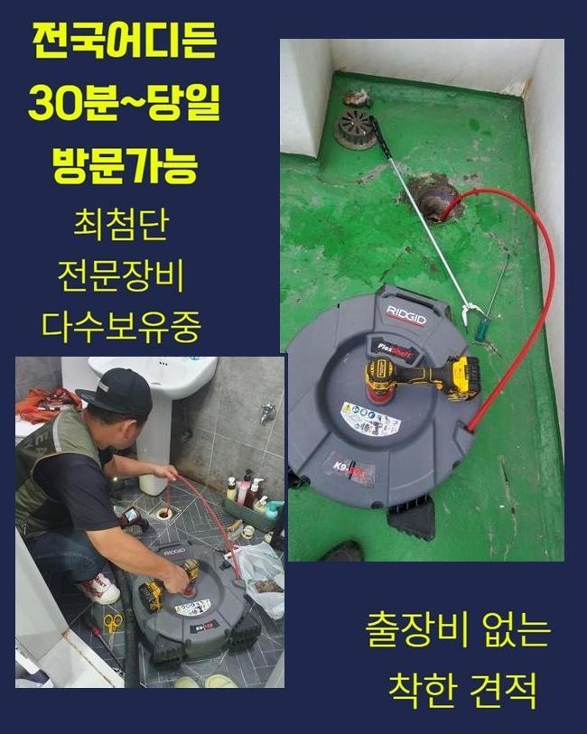
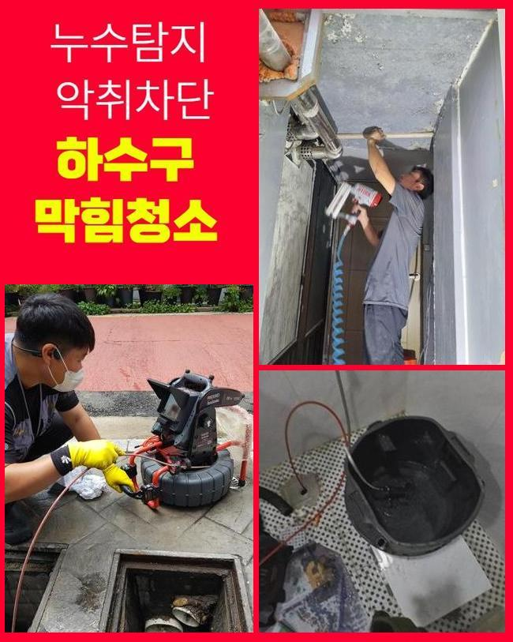
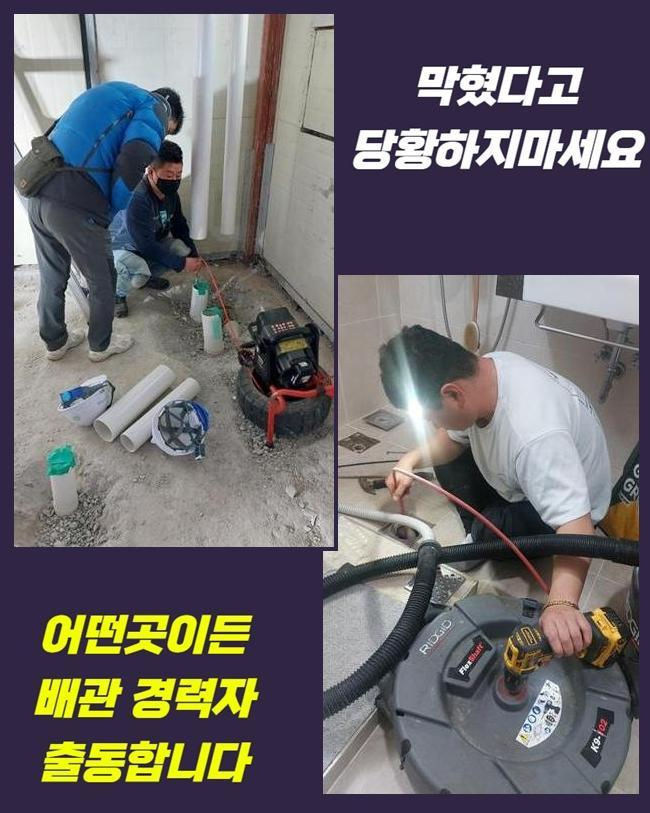
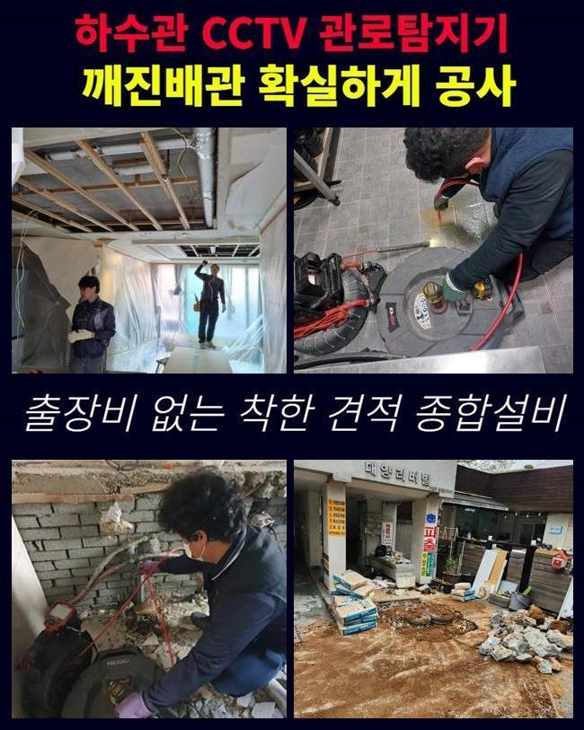
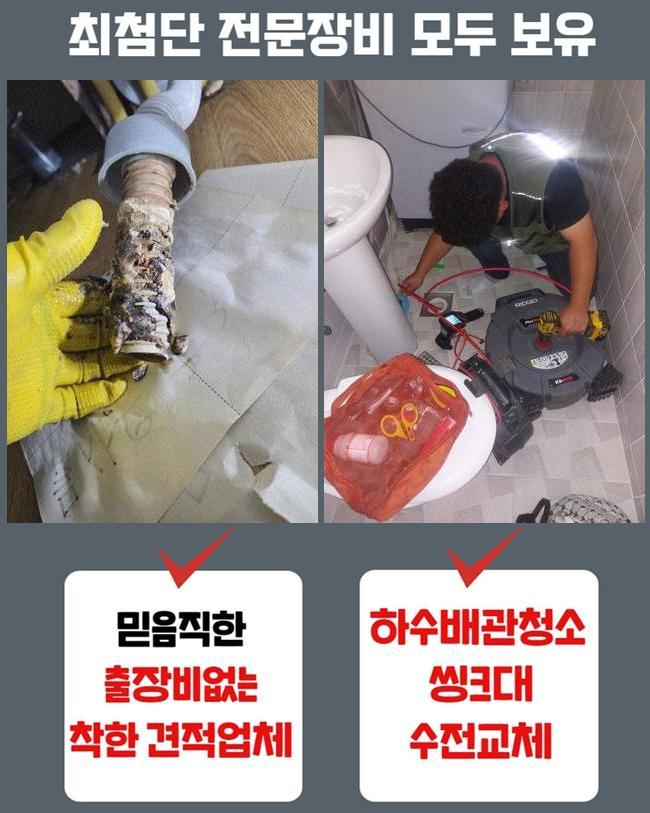
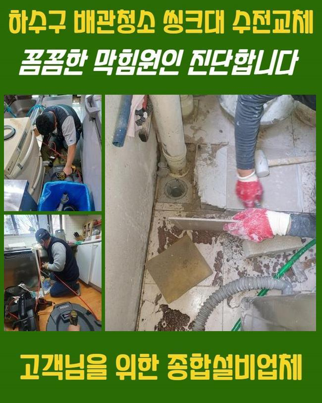

🏠 부천 춘의동하수구막힘 중동 하수구청소장비 설비공사
용인 하수구막힘 전문 시공 후기

📋 작업 개요
- 위치: 용인
- 서비스 유형: 하수구막힘, 배관막힘, 누수수리, 역류해결, 배관청소, 고압세척, 설비공사, 배관보수, 악취차단
- 작업 일시: 2024. 11. 22. 17:29
- 업체명: 하수구수사대 (010-5615-2118)
🔍 문제 상황
부천 춘의동하수구막힘 중동 하수구청소장비 설비공사
주방이나 화장실에서 정상적으로 하수가 내려가지않으면 갑갑하고 자체적으로 처리를 못하는 문제이므로 관련 기공을 부르시게 될텐데요
금일은 그것에 대한 배관 수리 과정을 설명해드리겠습니다
저희들이 방문드린 고객님의 처소는 5일정도 전 배관이 막혀버려서 일상에 문제상황을 촉발하고 있었어요
파이프가 차단되면 오수가 원활히 사라지지 못하기에 역류까지 이어질수 있고 더욱 곤란한 상황을 유발하기도 해요
따라서 빠른 처리가 요망되며 고통을 겪고 있으신 분들께서는 조속히 전문적인 수리를 받아시는 편을 추천합니다
그 문제들을 해결하려 우선해서 체크해봐야 되는건 배수쪽의 시스템이랍니다
배수처리에 적합하지 않은 습관등을 갖고 계시다면 배수기능이 제대로 안돌아가기도 해요
그렇기 때문에 정기적인 세척과 검사로 미연에 방지하는것이 좋답니다
작업과정에서는 내시경카메라를 활용해서 고질적인 장애가 존재하는 곳을 세밀히 확인한뒤 소제를 시작합니다
시공히 똑바로 시행되려면 정밀한 진단이 필수불가결하기 때문이랍니다
잔류물이 쌓였던 곳에서는 화학제품을 넣어 스무스하게 처치될수 있게 체계적으로 시공을 시행했어요
시공을 해나가면서 잔류물이 사라져나갔지만 완전한 세정까지는 상당량의 청소시간이 필요했답니다
딱딱해진 침전물들을 제거하려 플렉스샤프트 기기를 적용하기로 했어요

🔎 원인 분석
💡 전문가 진단: 정밀 진단 장비를 사용하여 슬러지의 고착 여부를 판명하고 타격/세척 작업을 실시했습니다.
샤프트기기 내부에 존재하는 단단한 노커로 찌꺼기를 떨어뜨려 효과적으로 제거한답니다
슬러지가 벽부위에 상당량 존재하여 플렉스샤프트 기기를 사용하여 청소계획을 세웠고 이와 함께 입구의 오염물질과 노폐물들을 제거하기로 했죠
오래두면 막대한 고장이 유발되기도 해서 신속한 정리가 요구된다고 설명드렸죠
이러한 시공 과정에서는 부수적인 장애가 나타나지 않게끔 조심스러운 자세를 유지해야 됩니다
관에 자극이 쌓이면 그쪽으로 배수흐름이 집중하게 되며 균탁이 일어나기도 한답니다
그렇기에 해당 기계를 쓸때는 꼭 능란한 기술수준이 요청됩니다
그리고 이땐 신속하게 의뢰해서 찌꺼기들이 적체되지 않게 만드시는게 중요해요
누수가 생겼는지 알아보려면 배수 속도를 점검하고 내시경설비로 배수관 내측 전체를 촬영해봐야 되죠
또한 트러블이 발굴됐다면 적합한 보수 등의 민첩하게 해결을 실행해야 하죠
우리들은 이러한 일에 대응해서 전반적인 수리도구들을 항상 가지고 다니죠
파이프에서 표출되는 이물질의 형태를 점검해보면 관련없는 슬러지가 보일때가 있는데요
공동주거 공간인 경우엔 한층 심각한 모습을 띠죠
이럴땐 관에 무게가 실려 누설까지 발현되기도 하기에 정밀한 조사가 요망되죠
배관카메라로 문제의 공간을 검증하는 단계가 배각된다면 근본적 요인을 탐검하지 못할수도 있는데요

🔧 작업 과정
내시경기기로 관로 내부를 탐지하며 다양한 오물들과 끈적해진 석회성분으로 배수길이 폐쇄됐다는걸 알아냈어요
방치해버리면 이물질이 토출될 지경이라 조속한 처리가 요망되었어요
하수관은 심중하게 오염된 상태였고 음식물 다양한 오물들과 석회성분이 쌓여 있었답니다
이것들 때문에 수돗물이 적합하게 흘러가지 못해 고장이 심화된거죠
그러하기에 분쇄공정과 세척작업이 필수였습니다
누적된 찌꺼기들을 파악하고자 내시경설비를 적용했고 그에 적법한 처리를 감행하였습니다
통수와 관련한 문제점을 처리하려는 계획 하에 작업을 수행했어요
그리고 결과적으로 관통로를 안정적으로 확보할수 있었답니다
거기에 더해 소제 과정에서 발생하는 오염물질이 배수관으로 흘러들어 누수증상을 유발할수도 있어서 미리 사전적으로 차단하시는게 합당합니다
그걸 방지하려면 시공시 하수관을 똑바로 막아 오염물질이 들어가지 않도록 조치해야 하죠
그러한 대처방안을 통해서 원만한 배관 이용을 해나갈수 있답니다
파이프의 균열을 방지하기 위해서 차분하게 분쇄공정을 하면서 내시경기기를 활용하여 이물이 집약된 곳을 간파했어요
하수관 하단부엔 경화가 된 석회물질이 있었으며 그것을 내팽개쳐버린다면 역류상황까지 발발할거란 사실을 알수 있었죠
저희들은 조심스레 노폐물을 빼내고 관을 세정하여 수도가 제대로 가동되게끔 조치하였습니다
이런 체계적인 정비를 바탕으로 수도설비의 시스템을 지속시키려는 태도가 계속될 필요가 있죠
이러한 공사과정으로 문제점을 없애고 이후 발발가능한 현상들도 예방할수 있었어요
의뢰인께서는 솔루션을 찾고 결과값을 확보하는 절차들이 중대한 이슈라는걸 체감하셨다고 말하셨어요
효율적으로 공정을 진행하려면 샤프트기계를 활용이행해야 됩니다
해당되는 기계가 예비되지 않으면 이물을 확실하게 제거하기 힘들고 몇달뒤에 또다시 막힐수가 있기 때문이에요
석션기계도 이에 준하는 임무를 맡고 있단걸 설명드립니다
하수관 안의 막힘은 한번이라도 목격되었다면 더욱 커질수가 있습니다
그러하기에 주기적 세척과정을 통해서 문제점을 사전에 막고 나타난 고장은 신속히 대응하여 해결수행해야 해요


✅ 작업 완료
이리 해나가면 이러한 사태와 이어진 불이익을 최소화할 수 있는데요
배관쓰레기 정리를 꼼꼼히 해나가고 근방을 깨끗하게 보존한다면 편안한 일상생활을 누리실수 있답니다
우리들은 고객님의 스케줄에 맞춰 일시를 정한뒤 방문드리고 많아요
배관이 무슨 연유로 고장났는지 따지지않고 첨단 기계들과 노하우로 시공을 해드린다는점을 강조합니다
갑작스럽게 관로에 장애가 발발했다면 편하게 연락해 주세요
깔끔하게 정리해 드릴게요




⚠️ 베란다 누수 및 방수 관리 방법
- ✅ 비가 많이 올 때 창틀 주변이나 아래층 천장에 얼룩이 생기는지 정기적으로 확인해 보세요.
- ✅ 우수관 주변 실리콘 마감이 들뜨거나 깨진 틈새가 있는지 손상 여부를 수시로 체크하세요.
- ✅ 베란다 바닥 타일의 줄눈(메지)이 소실되면 그 틈으로 물이 침투하여 누수가 유발됩니다.
- ✅ 누수 의심 증상 발견 시 방치하면 아래층 손실이 커지므로 즉시 전문가의 진단을 받으십시오.
💡 핵심 정리
- 확실한 장비 작업(내시경 점검 및 샤프트 스케일링)으로 원인을 뿌리 뽑습니다.
- 작업 후 1년 이내에 동일한 부위 재발 시 100% 무상 A/S 서비스를 보장합니다.
- 서울 · 경기 · 인천 전 지역에 24시간 언제든 긴급 출동할 수 있도록 항시 대기 중입니다.
❓ 자주 묻는 질문 (FAQ)
🚨 용인 하수구막힘 문제로 고민이신가요?
정확한 원인 진단과 확실한 시공으로 재발 없는 해결을 약속드립니다.
24시간 긴급 출동 | 서울 · 경기 · 인천 전지역 | 1년 내 재발 시 무상 A/S